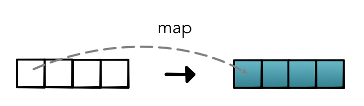

Parallel Computation¶
The major technique we will use to speed up computation is parallelization. General parallel code can be difficult to write and get correct. However, we can again take advantage of the fact that we have structured our infrastructure around a set of core, general operations that are used throughout the codebase.
Let's start by going back to Module 0 - Fundamentals and our map operation:
Higher-order map.
See https://en.wikipedia.org/wiki/Map_(higher-order_function)
- param fn
Function from one value to one value.
- type fn
one-arg function
- returns
A function that takes a list, applies fn to each element, and returns a new list
- rtype
function
There are many ways to implement this function. Let's consider a version where we pass it an explict output list to fill in. Here's a simple implementation:
def map(fn):
def _map(out, input):
for i in range(len(out)):
out[i] = fn(input[i])
return _map
This function produces the correct result, but it's not very efficient. Ideally, we could do something fast to take advantage of the fact that all the function calls are identical. Also, we shouldn't have to loop over the list one value at a time. By definition, map (and zipWith) can be fast and parallelized, since none of the individual computations interact with each other.
Python itself doesn't have great fuctions for fast math and parallelism built-in, but luckily it has good libraries to help speed up numerical computation. We will utilize one of these libraries known as Numba.
Numba JIT¶
Numba is a numerical JIT compiler for python. When a function is first created, it converts raw Python code to faster numerical operations under the hood. We have seen an example of this library earlier when developing our mathematical operators:
def neg(x):
return -x
This JIT function alone does not make the code much faster, but it allows us to use this code within other code. For instance, if we want to improve our map implementation, we can change it to look like this:
from numba import njit
def map(fn):
# Change 1: Move function from Python to JIT version.
fn = njit()(fn)
def _map(out, input):
for i in range(len(out)):
out[i] = fn(input[i])
# Change 2: Internal _map must be JIT version as well.
return njit()(_map)
# Note that all JIT happens when outer map is first called.
neg_map = map(neg)
When the above function is called, instead of running slow Python code, it will run fast low-level code that takes advantage of the structure. This approach requires a bit of overhead on startup, but can make things much faster.
Furthermore, if we know that the loop can be done in parallel, we can speed it up further with one small change:
from numba import njit, prange
def map(fn):
fn = njit()(fn)
def _map(out, input):
# Change 3: Run the loop in parallel (prange)
for i in prange(len(out)):
out[i] = fn(input[i])
return njit(parallel=True)(_map)
What's neat about this is that the above code is basically the same as the Python code without paralelization. You can switch back and forth between the two without much change.
Warning
You have to be a bit careful to ensure that the loop actually can be parallelized. In short, this means that steps cannot depend on each other and each iteration cannot write to the same output value. For instance, when implementing reduce, you have to be careful to mix parallel and non-parallel loops.
For full details on how Numba works, read this tutorial.